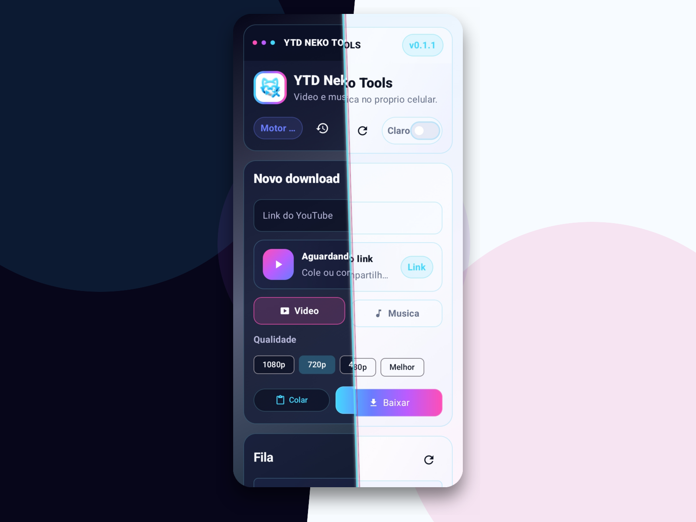
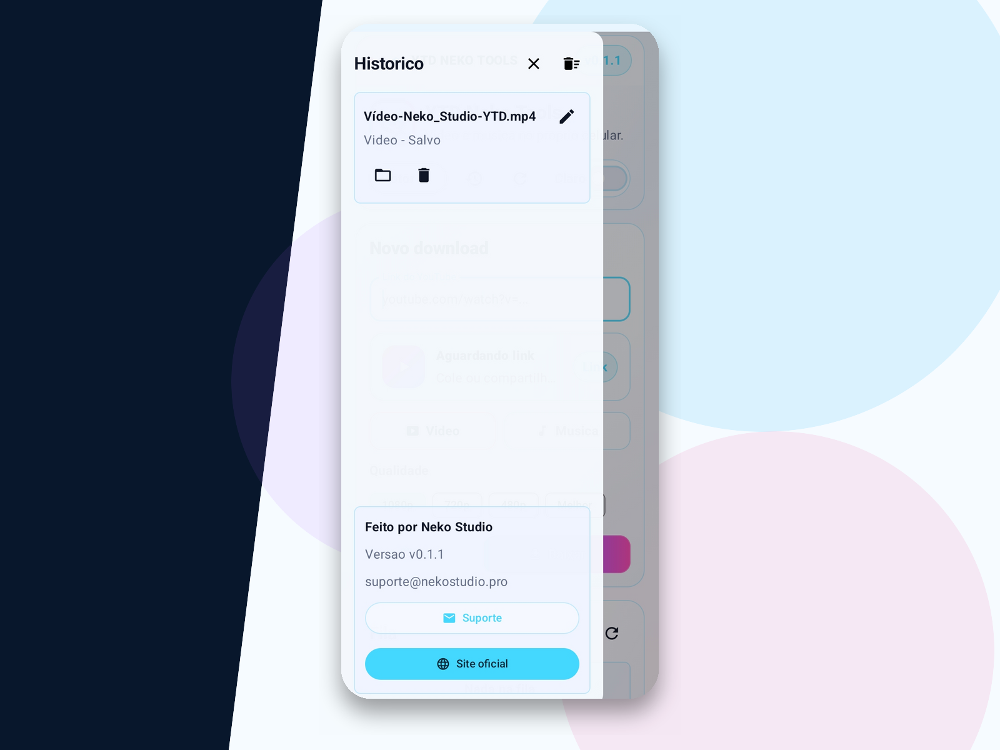
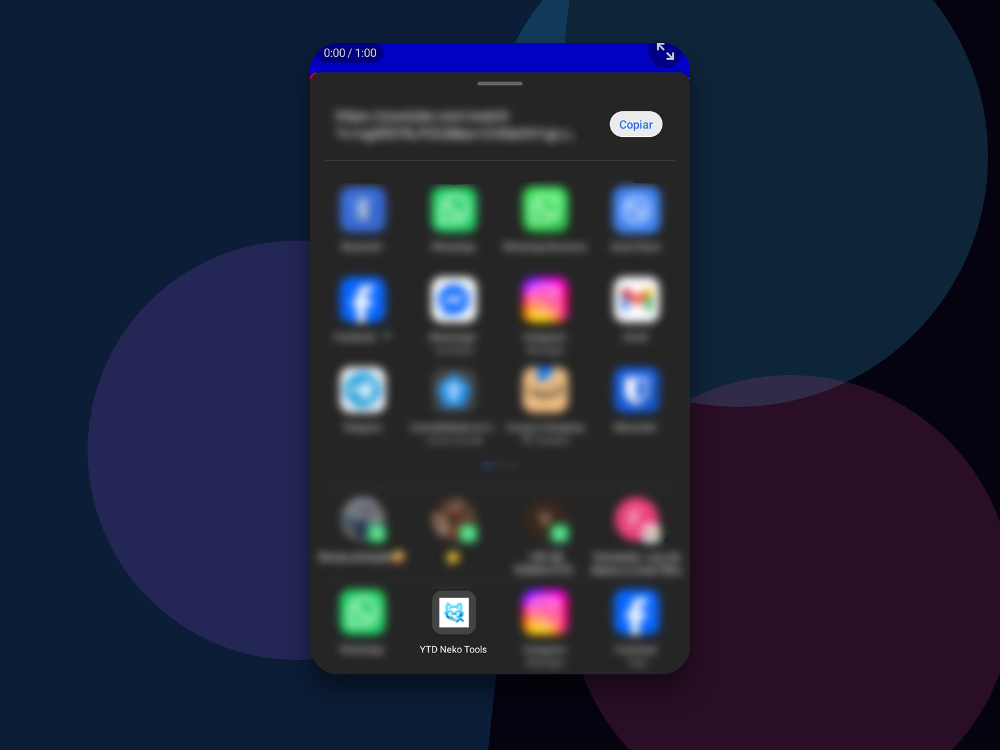

PC
YTD Neko Tools para PC
Versão desktop para Windows, ideal para baixar, organizar e salvar arquivos com mais controle.
Baixar para PCDownload oficial para PC.
Um app da Neko Studio para baixar vídeos do YouTube no PC ou no celular, com interface limpa e foco em praticidade.
A mesma proposta em dois formatos: uma instalação para computador e uma versão mobile para usar direto no celular.
Versão desktop para Windows, ideal para baixar, organizar e salvar arquivos com mais controle.
Baixar para PCDownload oficial para PC.
Versão Android em APK para quem prefere baixar pelo celular e manter os vídeos por perto.
Baixar APKDownload oficial via GitHub Releases.



Fluxo objetivo para colar o link, escolher o formato e salvar o arquivo.
Opções para vídeo e áudio conforme a disponibilidade do conteúdo.
Dois pacotes separados para manter cada experiência adequada ao dispositivo.
Indicado para conteúdos próprios, autorizados, livres ou permitidos pelo autor.
O YTD Neko Tools foi pensado para facilitar downloads pessoais e autorizados. Respeite direitos autorais, termos das plataformas e permissões dos criadores.
Cadastre seu e-mail para receber avisos de atualizações, novas versões e novidades oficiais.
Cadastrar e-mailAtendimento para dúvidas e suporte do YTD Neko Tools.